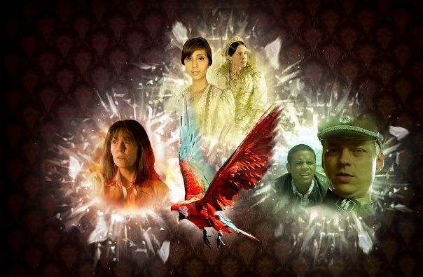

Lost in Time
Дата выхода: 8-9 ноября 2010
Формат: 2 эпизода по 30 мин.
| Варианты озвучек: | * Разные: смотрите по инструкции |
|---|---|
| Скачивание и просмотр: |
Безвредные расследования превращаются в эпические приключения во времени и пространстве. Сара Джейн и команда разделены загадочным Владельцем магазина в три различные временные зоны на протяжении всей истории. Там они встречают охотников за привидениями, нацистов, Тюдоров и узнают таинственного попугая по имени Капитан!
